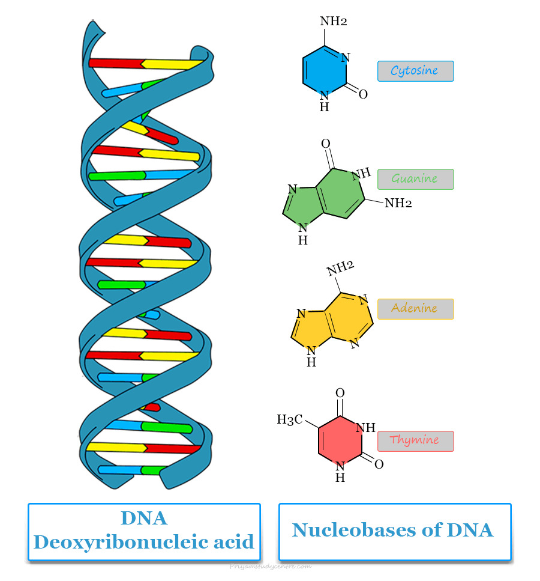

Rodzaje zasad azotowych
W DNA wyróżniamy cztery zasady azotowe, które dzielą się na dwie grupy: puryny oraz pirymidyny. Do puryn, które mają większą budowę chemiczną, należą adenina (A) i guanina (G). Pirymidyny są mniejsze i obejmują cytozynę (C) oraz tyminę (T).
Reguła komplementarności
Zasady azotowe łączą się ze sobą w sposób ściśle określony, dzięki dopasowaniu chemicznemu i przestrzennemu. Adenina (A) zawsze łączy się z tyminą (T) za pomocą dwóch wiązań wodorowych, natomiast guanina (G) z cytozyną (C) za pomocą trzech wiązań wodorowych.
Sekwencja DNA
Sekwencja DNA to kolejność, w jakiej zasady azotowe występują wzdłuż nici DNA. To właśnie ta kolejność stanowi instrukcję budowy białek i decyduje o cechach organizmu. Nawet niewielka zmiana w sekwencji, nazywana mutacją, może prowadzić do zmian w funkcjonowaniu organizmu.
Antyrównoległość nici DNA
Dwie nici DNA tworzące podwójną helisę biegną w przeciwnych kierunkach, co określa się jako antyrównoległość. Jedna nić biegnie w kierunku „do góry”, a druga „do dołu”. Taka budowa jest kluczowa podczas procesu replikacji DNA.
